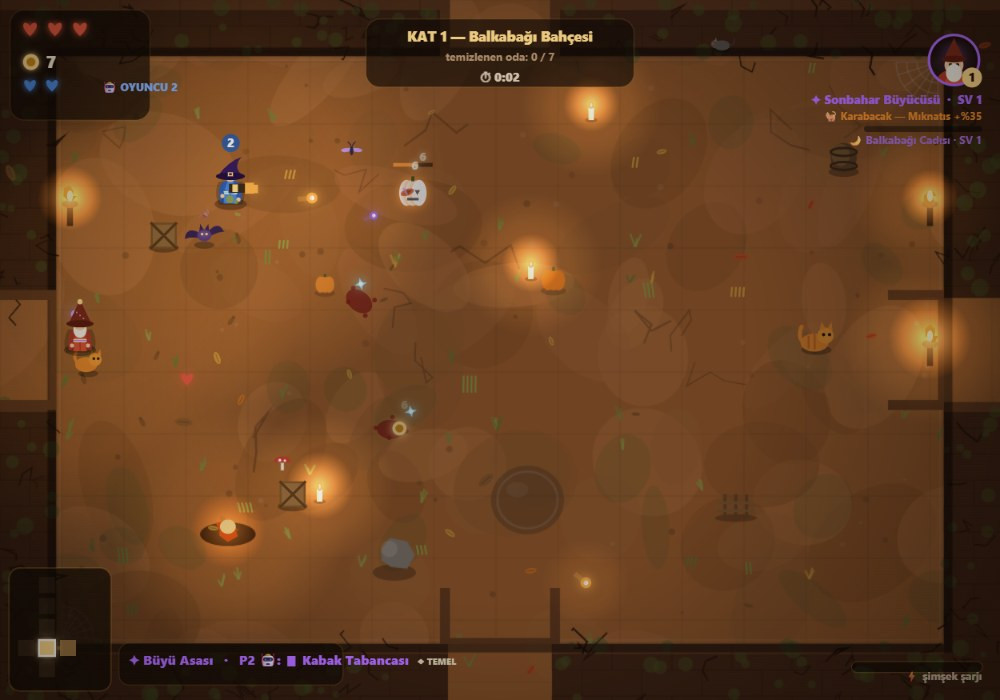

KABAK AVI
Sonbahar Büyücüsü
Prosedürel üretilen balkabağı diyarlarında geçen, tarayıcıda çalışan 2D aksiyon roguelite. Silahını al, düşmandan kap, tükenince fırlat. Patronların parçalarını kır, yolsuzluğu zincirle, av haritasından bir sonraki bölgeyi seç. İstersen yanına bir yoldaş al — yerel 2 kişilik!

Voidigo'dan ilham, kendi kimliğiyle.
Her şey koddan üretilir: zeminler, duvarlar, dekor, sesler ve canavarlar. Harici dosya, kütüphane veya internet bağlantısı gerekmez — tek HTML dosyasını çift tıkla, oyun başlar.
Düşür · Değiştir · Fırlat
Düşmanlar silah düşürür, mühimmat biter, silah kırılır. Yerden al, kuşan ya da düşmana fırlat.
Parçalanabilir Patronlar
Korkuluk'un kolları, Kemik Lordu'nun kaburgası, cadının büyü küresi... Parçaları kır, patronu güçsüz bırak.
Yolsuzluk Zinciri
Vuruşlar yolsuzluk yükler; dolan düşman patlar ve zincirleme çevreye yayılır.
Av Haritası
Her kat sonunda 3 bölge arasından seçim: bahçe, koru, kemik tarlası veya cadı vadisi.
5 Sınıf + 4 Evcil Hayvan
Büyücü, karakabak, cüce demirci, cadı kızı, çılgın palyaço; yanında kedi, kuzgun, kurbağa veya yavru kabak.
Yerel 2 Kişilik
Aynı klavyede iki oyuncu. İkinci oyuncuyu ister yapay zekâya bırak, ister ok tuşlarıyla devral.
Elit Rütbeler
ZIRHLI hasarı emer, HIZLI seni kovalar, ZEHİRLİ ölünce göl bırakır, KADİM daha çok altın taşır.
Gizli Odalar
Çatlak duvarları kır: haritada görünmeyen hazine odaları, sandık ve ganimet.
Canlı Dünya
Yaprak burgaçları, mum dumanı, gece ateşböcekleri, gökyüzünde kuş sürüleri, yağmur ve şimşek.
Bilge Baykuş
Her katın başında duvarda tüner; bir kez konuşur, oyunun sırlarını fısıldar.
Kalıcı İlerleme
Ölsen de ruhlar seninle: 10 kutsama, altın ve tecrübe çarpanları, zorluk seçenekleri.
Dokunmatik Destek
Telefonda sanal joystick ve düğmeler: dash, ışın, kullan, silah değiştir, fırlat.
Ekranlar.
Hepsi oyunun kendi çizim motorundan — tarayıcıda, 60 FPS.
Kontroller.
Fare ile nişan al, tıkla ve ateş et. Klavye kısayolları seni hayatta tutar.
| WASD | Hareket |
| Fare | Nişan · sol tık ateş · sağ tık ışın (beam) |
| Boşluk | Dash (hızlı kaçış / hasar) |
| E | Etkileşim: sandık, tüccar, baykuş, yer silahı |
| F / Q | Silah değiştir / fırlat |
| P · M | Duraklat · sesi kapat |
| ↑↓←→ | Hareket ve nişan |
| , | Dash |
| . / / | Silah değiştir / fırlat |
| 🤖 | Yapay zekâ varsayılan açık; menüden kapatıp devralabilirsin |
| 📱 | Dokunmatik: sol joystick + sağ düğmeler |
Sezon 2 · Canlı Dünya.
Son güncellemeyle dünyaya hayat geldi: ortam sesleri, hava olayları ve ufak canlılar.
Rüzgâr & Yaprak Burgaçı
Esinti yükseldiğinde yapraklar burgaçlanır, çimenler eğilir, hafif bir uğultu duyulur.
Şimşek & Gök Gürültüsü
Kemik Tarlası'nda bulutlar gürler; ekran çakar, ardından gürültü gelir. Ve yağmur sesi.
Kuşlar & Cırcırlar
Gündüz kuş cıvıltısı, gece cırcır sesi; gökyüzünde sürüler geçer.
Mum Dumanı
Mum, meşale ve ateş çukurlarından ince duman tüter; ışık titrer.
Gece Ateşböcekleri
Gece çöktüğünde her biyomda süzülen ateşböcekleri belirir.
Bilge Baykuş
Başlangıç odasında konuşan rehber: ipucu + tecrübe.
Sincaplar
Bahçede ve korda koşuşan sincaplar; sen yaklaşınca kaçışırlar.
Ayak Sesleri
Adım sesleri, toz ve çamur izleri; koşarken yapraklar havalanır.
Yepyeni Arayüz
Menü, HUD, mağaza, duraklatma ve harita ekranları baştan tasarlandı: cam paneller, amber vurgular, üstte boss can barı ve süzülen yapraklar.
Nasıl oynanır.
Odayı temizle
Kapılar kilitlidir; düşmanlar bitene kadar savaş. Ödül: silah, altın, ruh.
Haritayı gez
Mini harita sağ altta; hazine ve tüccar odalarını bul, gizli duvarları kır.
Yadigâr seç
Her kat sonunda 3 yadigârdan birini seç; kombinasyonlar her seferinde değişir.
Patronu devir
En uzak odada patron bekler. Parçalarını kır, fazlarını öğren, sonra sıradaki bölgeye.